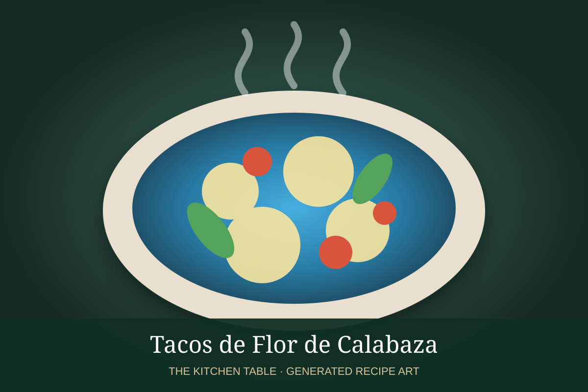

← Back to all recipes
VEGETABLE · MEXICAN
Tacos de Flor de Calabaza
Tender squash blossoms sautéed with onion, corn, epazote, chile, and melting cheese in warm corn tortillas.
30 minMakes 8 tacos

Photo: Animal Gourmet / Yahoo
Ingredients
- 24 squash blossoms, cleaned
- 1 tbsp butter or oil
- 1/3 white onion, sliced
- 1/2 cup corn kernels
- 1 serrano chile, sliced
- 1 tbsp chopped epazote
- 4 oz Oaxaca or panela cheese
- 8 corn tortillas
- Salt
Preparation
- Remove stems and stamens from squash blossoms and gently clean them.
- Cook onion in butter or oil until soft.
- Add corn, serrano, blossoms, epazote, and a pinch of salt; cook just until blossoms wilt.
- Warm tortillas and add the filling with cheese.
- Fold and heat until the cheese softens; serve immediately.